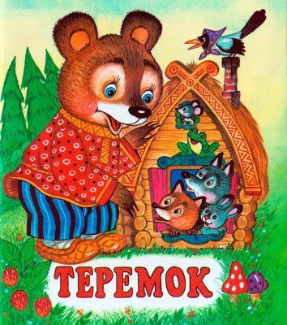
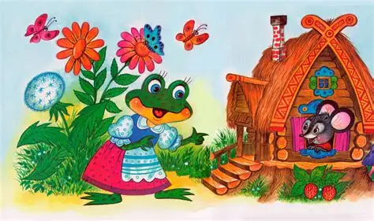
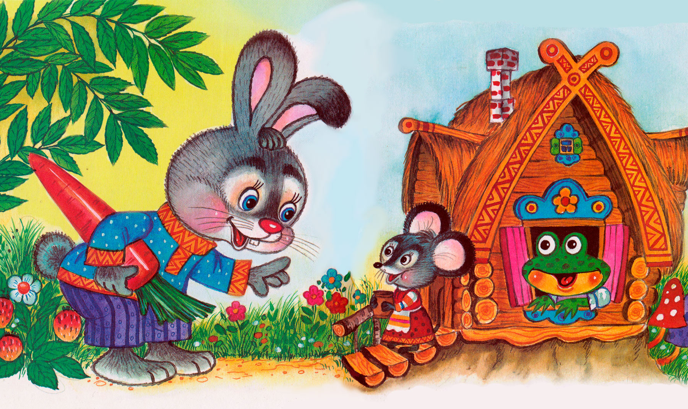
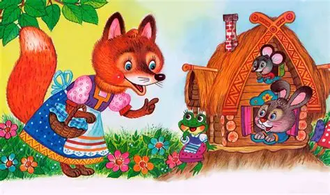
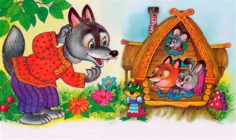
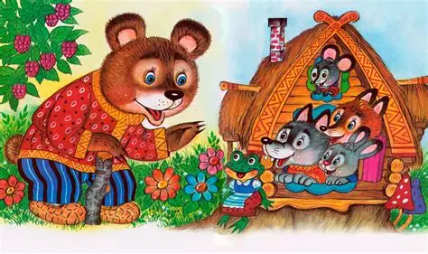
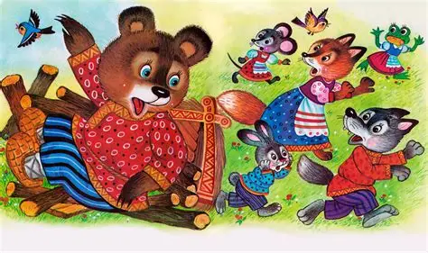

Сказка "Теремок"
"Теремок"

Cтоит в поле теремок.
Бежит мимо мышка-норушка. Увидела теремок, остановилась и спрашивает:
– Терем-теремок! Кто в тереме живёт?
Никто не отзывается.
Вошла мышка в теремок и стала в нём жить.

Прискакала к терему лягушка-квакушка и спрашивает:
– Терем-теремок! Кто в тереме живёт?
– Я, мышка-норушка! А ты кто?
– А я лягушка-квакушка.
– Иди ко мне жить!
Лягушка прыгнула в теремок. Стали они вдвоём жить.

Бежит мимо зайчик-побегайчик. Остановился и спрашивает:
– Терем-теремок! Кто в тереме живёт?
– Я, мышка-норушка!
– Я, лягушка-квакушка.
– А ты кто?
– А я зайчик-побегайчик
– Иди к нам жить!
Заяц скок в теремок! Стали они втроём жить.

Идёт лисичка-сестричка. Постучала в окошко и спрашивает:
– Терем-теремок! Кто в тереме живёт?
– Я, мышка-норушка!
– Я, лягушка-квакушка.
– Я, зайчик-побегайчик.
– А ты кто?
– А я лисичка-сестричка.
– Иди к нам жить!
Забралась лисичка в теремок. Стали они вчетвером жить.

Прибежал волчок-серый бочок, заглянул в дверь, и спрашивает:
– Терем-теремок! Кто в тереме живёт?
– Я, мышка-норушка!
– Я, лягушка-квакушка.
– Я, зайчик-побегайчик.
– Я, лисичка-сестричка.
– А ты кто?
– А я волчок-серый бочок.
– Иди к нам жить!
Волк и влез в теремок. Стали впятером жить.
Вот они все в теремке живут, песни поют.

Вдруг идёт мимо медведь косолапый. Увидел медведь теремок, услыхал песни, остановился и заревел во всю мочь:
– Терем-теремок! Кто в тереме живёт?
– Я, мышка-норушка!
– Я, лягушка-квакушка.
– Я, зайчик-побегайчик.
– Я, лисичка-сестричка.
– Я, волчок-серый бочок.
– А ты кто?
– А я медведь косолапый.
– Иди к нам жить!
Медведь и полез в теремок.
Медведь Лез-лез, лез-лез – никак не мог влезть и говорит:
– Я лучше у вас на крыше буду жить.
– Да ты нас раздавишь!
– Нет, не раздавлю.
– Ну так полезай!

Влез медведь на крышу и только уселся – трах! – раздавил теремок.
Еле-еле успели из него выскочить:
мышка-норушка, лягушка-квакушка, зайчик-побегайчик, лисичка-сестричка, волчок-серый бочок
– все целы и невредимы.
Принялись они брёвна носить, доски пилить – новый теремок строить.
Друзья строят новый теремок.
Лучше прежнего выстроили!
Подробнее